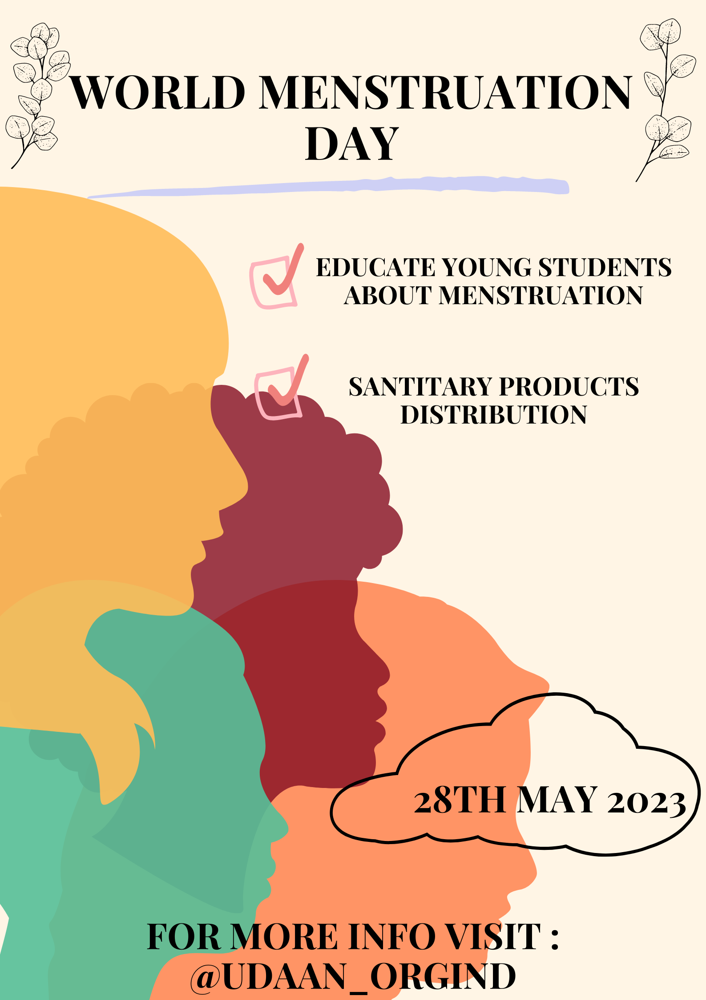

As an NGO named UDAAN, our initiative is focused on addressing
children's health care, financial issues, and education. Here's an
overview of our initiative in each of these areas:
Children's Health Care:
Providing access to quality healthcare services for underprivileged
children.
Collaborating with healthcare professionals and hospitals to offer
specialized treatments when necessary.
Raising awareness about preventive measures and healthy habits among
children and their families.
Mid Day Meal:
Providing meals during regular breaks in school.
Providing free meal to the needy people who can have their meal at our NGO.
Education:
Promoting access to quality education for all children, regardless of their
socio-economic background.
Establishing and supporting schools in underserved areas to provide a
conducive learning environment.
Menstruation:
Providing sanitary pads in rural areas for women.
Creating awareness among people about the use of the sanitary pads and
how it can be really helpful in avoiding harmful diseases.
Upcoming Events

World Menstruation Day

.jpg)

.jpg)